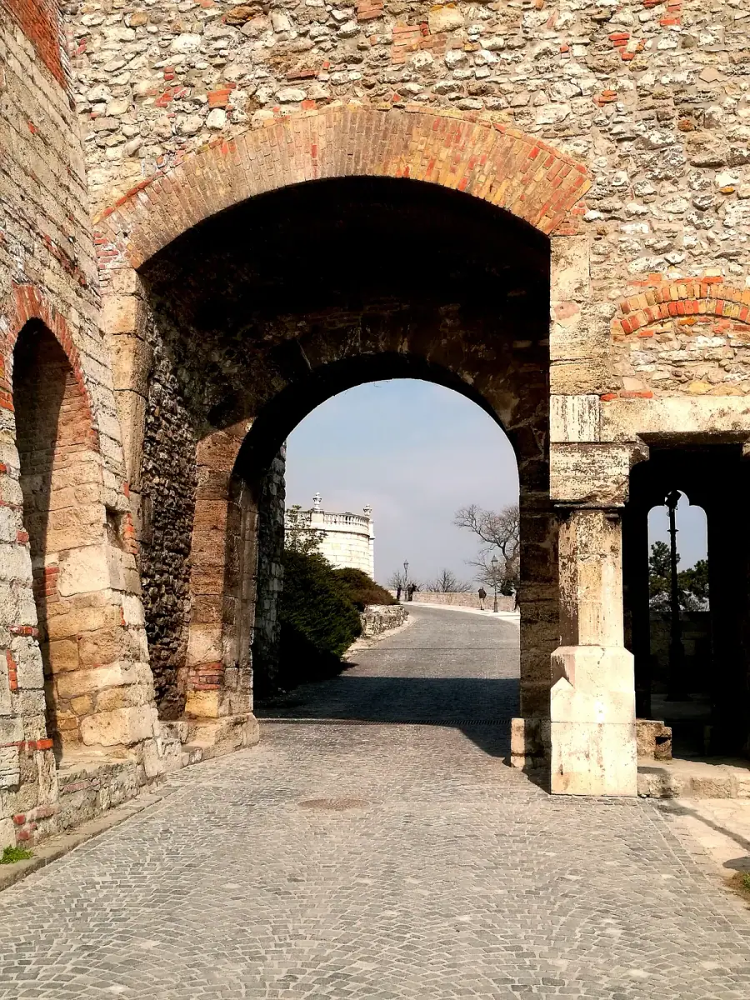
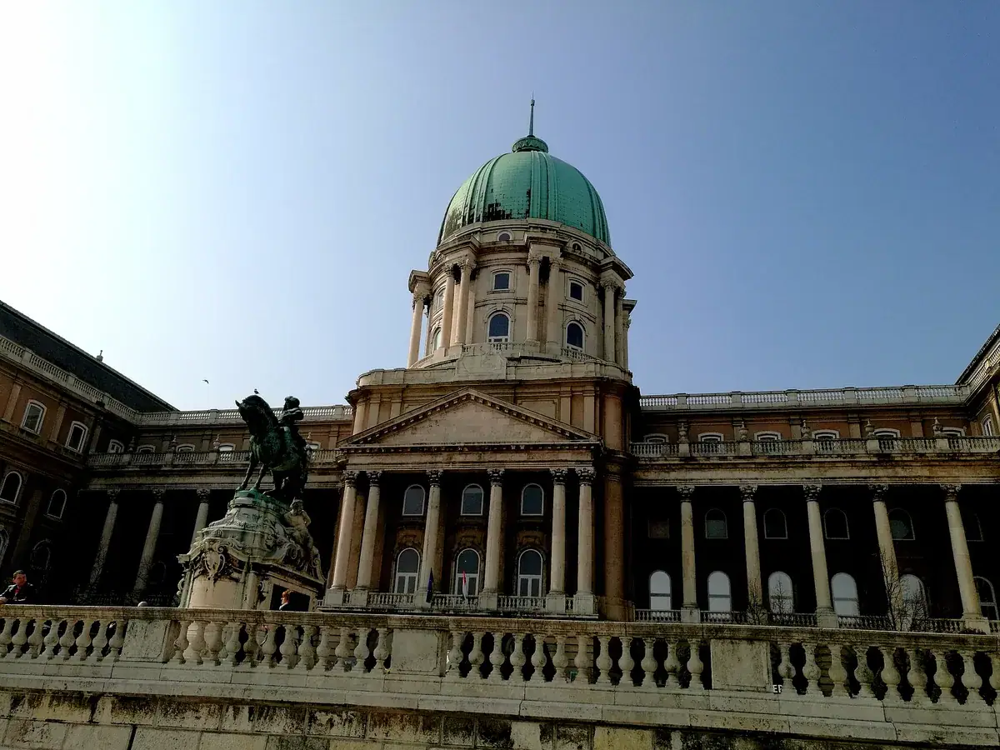
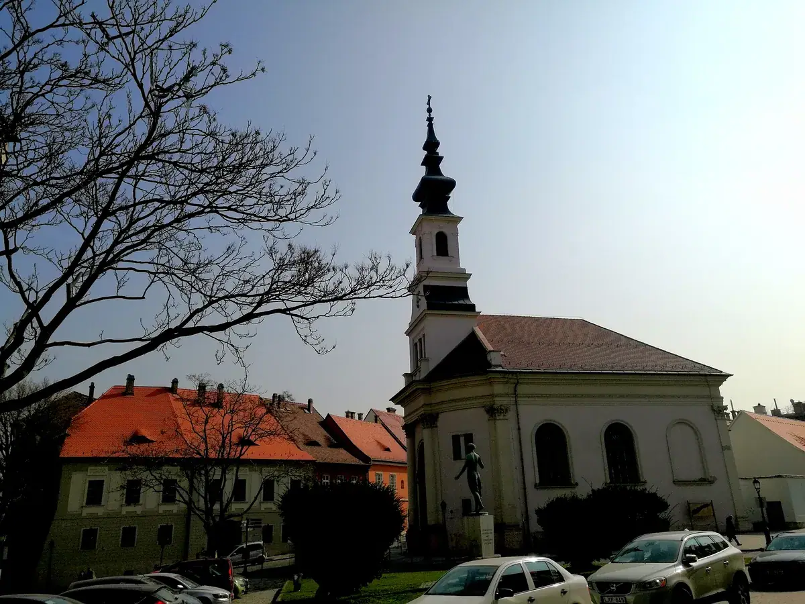
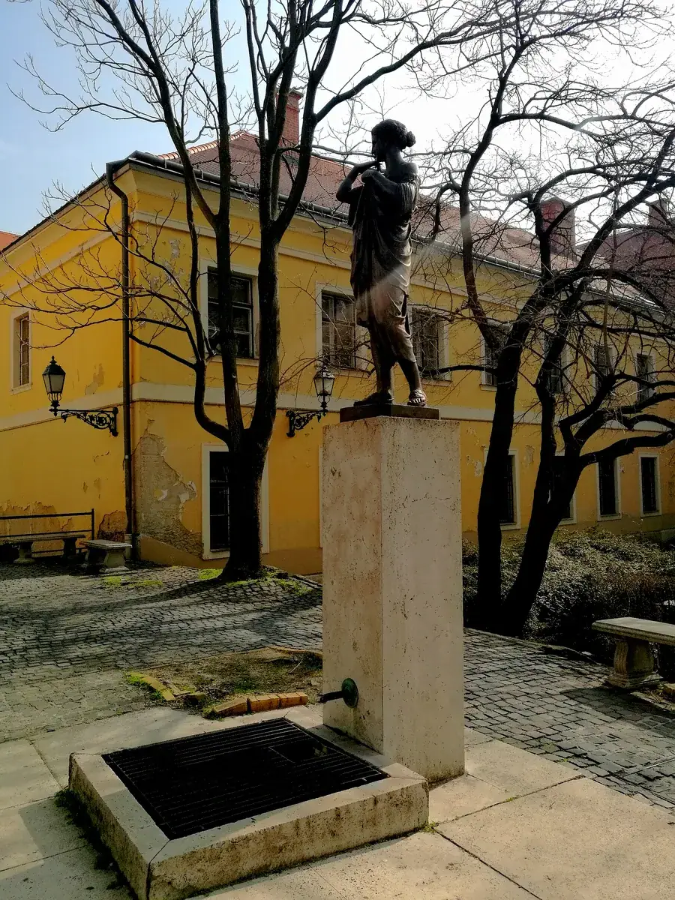
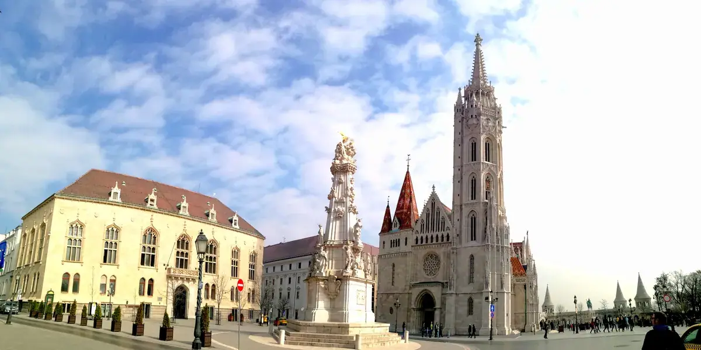

布达城堡——一座宫殿的三次死亡与重生，和一部匈牙利产业史
Buda Castle — a palace's three deaths and rebirths, and a history of Hungarian industry.

（2017 年 · 匈牙利 · 布达佩斯 · 布达城堡 / 皇宫）
一座为了防蒙古人而建的宫殿，后来又被炸了三次
那座被描述为“老皇宫”、后来似乎毁于战火、如今带有废墟感的建筑，可能是布达城堡（布达皇宫）。这座建筑的历史可追溯至中世纪。蒙古西征之后，匈牙利王国加强防御建设，是理解这一时期城堡发展的重要背景；不过，仅凭现有记录，尚不能确认当时所见部分的具体年代及其建造缘由。
此后，这座建筑经历了多次占领、改建、火灾与战争破坏。16 世纪奥斯曼帝国占领布达期间，王宫一度被改建成清真寺；18 世纪哈布斯堡王朝统治时期又进行了大规模扩建。二战末期的布达佩斯围城战给城市带来严重破坏，王宫也未能幸免。今天看到的布达城堡经过战后重建，并未完全复原旧有形制，部分原有装饰与雕塑也未能保留。结合这些历史变迁，现场呈现出的残缺感并不难理解；眼前的建筑既保留了王宫的历史层次，也留下了战争与重建的痕迹。


从「防蒙古」到「防炮火」：一座宫殿，几乎见证了匈牙利每一次被卷入的战争
如果把布达城堡的建造和历次重建串起来看，会发现一件挺震撼的事：这座宫殿几乎每一次「死而复生」，背后对应的都是匈牙利被卷入的一场外部力量的冲击——13 世纪的蒙古入侵，16 世纪的奥斯曼占领，20 世纪的两次世界大战。匈牙利这个国家的地理位置，注定了它几百年来一直处在几大帝国和几大势力的交界地带，布达城堡这栋建筑物，某种意义上就是这段「反复被卷入、反复重建」的历史最直观的物证。


从被动卷入，到主动选择：今天的匈牙利，换了一种方式「被卷入全球化」
放在今天看，匈牙利依然处在一个地理十字路口上，只是如今影响其发展路径的力量，更多来自资本与产业链。前文提到的新能源汽车和电池产业集聚，以及 2025 年对家居建材行业的考察，都能从这一地理位置中找到背景：匈牙利地处中欧腹地，毗邻德国和奥地利等欧洲制造业核心区，又是欧盟成员国，具备承接产业转移的区位条件。
不同的是，这一次匈牙利不是完全被动的——它是主动开出优惠政策去招商引资，主动选择要不要接住这些产能。但这种「主动选择」也不代表没有代价：就像之前提到的，新能源产业的快速涌入，已经在德布勒森这样的城市引发了当地居民对环境和水资源的真实担忧，并且直接反映到了 2026 年那场政府更迭的选票上。历史上布达城堡被反复摧毁重建，是因为匈牙利没有能力抵御外部力量；今天匈牙利在产业问题上的纠结和反复，则是因为它有了选择的能力，却还在学习怎么为这种选择承担后果。
写在最后
站在布达城堡这个曾经因防御而建、又历经战争与重建的地方，再看今天匈牙利在新能源产业里的处境，很容易生出历史感：同一片土地、同一个交通要冲，时代变了，影响它的力量也从军队和炮火转向资本与投资。这样的变化是否意味着进步，仍值得讨论；但布达城堡留下的战争痕迹，与今天德布勒森工厂门口的抗议声，都提醒人们，产业投资与地方社会之间并非没有张力。
有些地方几百年都没有远离过"被更大的力量选中"这件事，只是入侵者换成了投资者，炮火换成了资本。
——董立鑫 海鑫汇创始人兼执行总裁，新加坡世贸秘书长兼首席运营官
本文整理自董立鑫（Bruce Dong）海外产业考察记录，首发于海鑫汇。